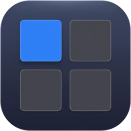

Use the keyboard
The arrow keys move the selection. Shift with an arrow key makes it larger or smaller. Return snaps the window.
Free and open source for macOS
Press a shortcut and a grid appears. Drag across the cells you want, and the window snaps to that area. GridSnap is an open source alternative to Divvy for macOS.
$ brew install --cask konieczkow/tap/gridsnap
macOS 14 or laterApple Silicon and IntelMIT License
A grid panel appears on every display. It outlines the cells that the window covers now.
The window follows your drag, so you see the result before you release.
The window stays where you put it. To cancel instead, press Esc and the window returns to where it was.
01Features
The arrow keys move the selection. Shift with an arrow key makes it larger or smaller. Return snaps the window.
Hold Shift when you release, and GridSnap saves the area. Apply it later with a number key on the grid, or give it a shortcut that works everywhere.
Each display has its own grid. To move a window to another display, drag on the grid there, or press Tab.
Choose up to 24 columns and 24 rows, and the gap between snapped windows. GridSnap can move the focused window or the one under the cursor.
Press ⌃⌥Z to put the window back where it was. Press it again to redo the snap.
GridSnap has no Dock icon. It stays in the menu bar and can start when you log in.
GridSnap does not use the network, collect analytics, or need an account.
You can change the first two in Settings, and give any preset a shortcut of its own.
02Themes
Every theme has a light and a dark version, and GridSnap uses the one that matches macOS. A theme is a small JSON file, and it only needs to hold what it changes. Choose a theme, then edit it below and watch both grids change.
A theme can use "accent" as a colour. It is the accent colour you chose in System Settings.
To install a theme, put the file in ~/Library/Application Support/GridSnap/Themes and choose it in Settings. Read the theme guide
03Install
Homebrew
$ brew install --cask konieczkow/tap/gridsnap
Homebrew also keeps GridSnap up to date when you run brew upgrade.
Direct download
Unzip the file and drag GridSnap to your Applications folder. See all releases
First launch
When you first open GridSnap, it asks for the Accessibility permission. macOS requires this permission before an app can move the windows of other apps.
GridSnap needs macOS 14 or later and runs on Apple Silicon and Intel Macs. It is tested on macOS 26, where the grid uses the glass material. On older versions the grid is frosted instead.
04Open source
GridSnap asks for the Accessibility permission, so you should be able to check what it does with it. The whole app is about 1,300 lines of Swift in 11 files. It has no third-party dependencies and no Xcode project. One shell script builds it.
$ git clone https://github.com/konieczkow/gridsnap.git
$ cd gridsnap && ls Sources
AX.swift # finds and moves windows
BuiltinThemes.swift # the ten built-in themes
Defaults.swift # stored settings
Grid.swift # the grid overlay
Hotkeys.swift # global shortcuts
Menu.swift # the menu bar menu
Presets.swift # presets
SettingsWindow.swift # the Settings window
ShortcutButton.swift # records a shortcut
Themes.swift # reads and checks a theme
main.swift # startup
$ ./build.sh install
built build/GridSnap.app (signed: GridSnap Dev)
installed /Applications/GridSnap.app05Questions
If your question is not here, open an issue on GitHub
Yes. GridSnap is free and open source, released under the MIT License.
macOS does not let an app move or resize the windows of other apps without this permission. GridSnap uses it to find the window, read its position and size, and change them.
GridSnap needs macOS 14 or later and runs on Apple Silicon and Intel Macs. It is tested on macOS 26, where the grid uses the glass material. On older versions the grid is frosted instead.
Yes. Each display has its own grid panel. When you select cells on a panel, the window snaps to the display of that panel. With the keyboard, press Tab to move the selection to the next display.
Yes. In Settings you can change the shortcut that shows the grid and the shortcut that undoes a snap. Each preset can also have its own shortcut.
GridSnap cannot snap a window that is in full-screen mode. Some apps also set a minimum window size and will not shrink to a small area. Such a window stays on the screen and overlaps the neighbouring cells.
Choose Quit GridSnap from its menu, then move GridSnap from your Applications folder to the Trash. If you installed it with Homebrew, run brew uninstall --cask gridsnap instead.

GridSnap is free. It takes a minute to install.